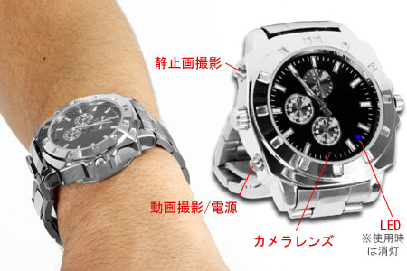

HD動画も撮れる腕時計型ビデオカメラ 43
ストーリー by hylom
完成度だんだんと向上 部門より
完成度だんだんと向上 部門より
あるAnonymous Coward 曰く、
これまでにも/.Jでも度々話題になったアレゲガジェットメーカー、サンコーが、HD対応の腕時計型ビデオカメラ「VIDEO CAMERA Analog Watch HD」を発売した。「アナタもコレで名探偵！HD動画を撮影できるスゴ腕時計」とうたわれている。
サンコーはこれまでもさまざまなビデオカメラ内蔵機器を発売していたのだが、いよいよこんなに高級感を出せるようになったか。でも、 「クロノ部は飾りで動きません。」は、価格を考えた正しい態度だと思います。
ちなみに、姉妹製品（？）としてHD対応ビデオカメラ内蔵ボールペンというのも発売されている。

アナタもコレで名探偵！ (スコア:5, おもしろおかしい)
麻酔針の照準をあわせる蓋はどこですか？
モデレータは基本役立たずなの気にしてないよ